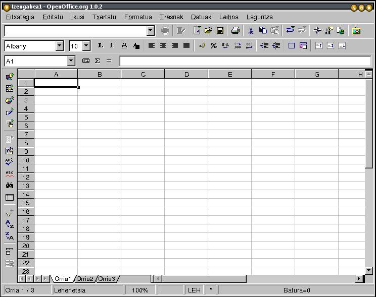

| ||
Edukia:
Kalkulu konplexuak egiten hasi aurretik, ikus ditzagun lan-ingurunean erabilgarri dituzun tresnak.

Justu titulu-barraren azpian lau tresna-barra ikusiko dituzu:
Menu-barrak Calc moduluko menu nagusiak biltzen ditu. Funtzio-barran, OpenOffice.org-en Ireki, Gorde, Kopiatu, Ebaki, Itsatsi eta beste ohiko ekintza batzuk gauzatzeko funtzio-ikonoak aurkituko dituzu. Objektu-barran, berriz, kalkuluak egiteko eta gelaxkak formateatzeko tresnak dituzu erabilgarri (zenbaki-formatua, testu-lerrokatzea, ertzak, etab.). Bestalde, Kalkulu-barra formulak sartzeko erabiltzen da, eta kalkulu-orrian kurtsoreak duen kokalekua erakusten du.
Oharra : Jende askok uste du tresna-barra hauek ezin direla aldatu, baina hori ez da egia. Posible da ikonoak eta funtzio asoziatuak aldatzea erabiltzailearen beharren arabera egokitzeko. Horretarako saguaren eskuineko botoia sakatu behar da tresna-barra nagusian edo Objektu-barran. Orduan testuinguruaren araberako laster-menu bat agertuko da. Tresna-barraren edukia aldatzeko, `Konfiguratu' edo `Pertsonalizatu' hautatu behar da. `Botoi ikusgaiak' hautatzen baduzu, nahi dituzun botoiak gehitu edo kendu ahal izango dituzu. Laster-menutik abiatuta, beste tresna-barra bat ere gehi dezakezu, Aukera-barra izenekoa. Lehenespenez ez da erakusten. Barra horrek hainbat botoi osagarri izaten ditu, oso erabilgarriak kokapenak eta aldaketak egiteko.
 Pantailaren ezkerraldean Tresna-barra nagusia ikusiko duzu (hemen eskuineko irudia). Kalkulu-orriarekin lan egiteko behar dituzun tresnak biltzen dira tresna-barra honetan. 'Nola egin...' dokumentu honetan tresna-barraren oinarrizko funtzioak azaltzen dira. Pantailaren behealdean Egoera-barra ikusiko duzu. Oinarrizko informazioa ematen du barra honek: unean erabiltzen ari zaren orria, orrialde-estiloa, eta, modu normalean, kurtsorea kokatutako gelaxkaren batura.
Pantailaren ezkerraldean Tresna-barra nagusia ikusiko duzu (hemen eskuineko irudia). Kalkulu-orriarekin lan egiteko behar dituzun tresnak biltzen dira tresna-barra honetan. 'Nola egin...' dokumentu honetan tresna-barraren oinarrizko funtzioak azaltzen dira. Pantailaren behealdean Egoera-barra ikusiko duzu. Oinarrizko informazioa ematen du barra honek: unean erabiltzen ari zaren orria, orrialde-estiloa, eta, modu normalean, kurtsorea kokatutako gelaxkaren batura.
Gelaxkaz osatutako sareta gisa irudikatzen da kalkulu-orria eta gelaxka bakoitzak erreferentzia esklusiboa du. Erreferentzia hori bi elementuk osatzen dute: alde batetik zutabea adierazten da (erreferentzia bertikala), eta, bestetik, errenkada (erreferentzia horizontala). Hemen zutabea adierazteko letra erabili da (adib. A...Z, etab.) eta, errenkada adierazteko, zenbakia (adib. 1...65000, etab.).Kalkulu-orriko zutabe eta errenkaden goiburukoak grisez agertzen dira. Beraz, lehen errenkadako lehen gelaxkak (goi-ezkerraldeko ertzekoak) A1 erreferentzia izango du.
Aurreko paragrafoak irakurri gabe salto egin baduzu atal honetara, atzera joan eta irakurtzea gomendatzen da, hemen erabiliko diren terminoak paragrafo horietan azaltzen dira eta. Dena den, pazientziarik ez baduzu, nekatuta edo aspertuta bazaude, edo paragrafoak irakurtzeko gogorik ez badaukazu, jarraitu hau irakurtzen eta batuketak Calc-ekin nola egiten diren ikusiko dugu.
Goian aipatu denez, saretako laukiei gelaxka esaten zaie. Testua, zenbakiak edo formulak sar ditzakezu gelaxketan. Bistakoa denez, gelaxketan kalkuluak egitea izaten da kalkulu-orrien funtzio nagusia.
Azalpen hauen guztien ondoren, has gaitezen kalkuluak egiten. :
Ondoren sakatu `Sartu' tekla
Gelaxkan "5" agertuko dela ikusiko duzu, kalkuluaren emaitza automatikoki agertzen baita.
Orain, justu A1en azpiko gelaxkan egon beharko luke kurtsoreak, baina beste behin klik egiten baduzu A1 gelaxkan, sartu berri duzun eragiketa matematikoa agertuko da Kalkulu-barran.
Jarrai dezagun. Orain, sartu 6 zenbakia A2 gelaxkan, eta ondoren aginduko diogu A1 gelaxkako balioa A2koari gehitu eta A3 gelaxkan bistara dezala emaitza. Honela egiten da:
Berretsi datua 'Sartu' tekla sakatuz, eta kurtsorea A3 gelaxkara joango da
Idatzi "=A1+A2" (komatxorik gabe)
Berretsi `Sartu' teklarekin, eta A3 gelaxkan emaitza ("11") agertzen dela ikusiko duzu
Azken kalkulu hori gelaxka-erreferentziekin egin dugu, eta ez balio soilekin.
Goazen aurrera. Gelaxken zutabe osoa batuko dugu, hau da, area bat. Egin klik Orria2 fitxan eta orri garbi bat bistaratuko da.
Berretsi `Sartu' teklarekin, eta kurtsorea A10 gelaxkara joango da
Idatzi "=sum(A1:A9)" (komatxorik gabe)
Berretsi `Sartu' teklarekin, eta A10 gelaxkan batura ikusiko duzu. Formula kalkuluen barran bistaratuko da.
Gelaxka-erreferentzien artean bi puntu [ : ] idaztean, A1 eta A9 gelaxken arteko balioak gehitu nahi dituzula adierazi diozu programari. Area ertz-gorriarekin adierazten da pantailan.
`sum ()' idazten duzunean, parentesien artean erreferentziatutako gelaxketan egin nahi duzun eragiketa matematikoa adierazten diozu programari.
Oharra : `sum' idaztean beharbada konturatuko zinen Calc-ek formula osatzeko iradokizuna egiten duela. Hori Osatze automatikoaren funtzioa da, eta, proposatutakoarekin ados bazaude, nahikoa da `Sartu' sakatzea. Orduan kurtsorea automatikoki parentesien artean kokatuko da, zuk areak definitzeko.
Berriro egingo dugu, baina oraingoan bi puntuen ordez puntu eta koma (;) jarriko dugu A1 eta A9ren artean. Emaitza desberdina dela ikusiko duzu. Kasu honetan A1 eta A9 gelaxketako balioak bakarrik batu dituzu, eta ez area guztikoak. Hortaz, bi areatako gelaxkak batzeko hau idatzi behar duzu: "=sum(A1:A9;B1:B9)".
Saguarekin ere hauta ditzakezu batu nahi dituzun bi areak. Helburuko gelaxkan "= sum(" idatzi ondoren, egin klik lehen gelaxkan, eta, saguaren botoia sakatuta daukazula, arrastatu sagua areako azken gelaxkara. Ondoren, askatu saguaren botoia, eta formularen bukaera automatikoki formula-barran txertatu dela ikusiko duzu.
Oharra : Zenbakia gelaxkan osorik bistaratzeko handiegia bada, musikako diese-ikurrekin ordeztuko da(###). Gelaxkaren tamaina doitzeko, nahikoa da eskuineko zutabe-bereizlean klik egin eta arrastatzea. Zabaltzeko eskuinerantz arrastatuko dugu, eta estutzeko, aldiz, ezkerrerantz. Halaber, funtzio bera baliatuko dugu Formatua - Zutabea - Zabalera optimoa komandoarekin.
Erreferentziei buruz
Formulak dituzten gelaxkekin kalkuluak egiteko, oso garrantzitsua da erreferentzien oinarrizko ideiak ondo ulertzea.
Erreferentzia erlatiboa, formula lekuz aldatzean egokitzen diren erreferentziak dituen area da:
Adib. : "=sum(A1:A9)" formula B zutabean kopiatzen baduzu, "=sum(B1:B9)" bihurtuko da.
Kalkulu-orriko gelaxka jakin bati erreferentzia egin behar badio kalkuluak, orduan erreferentzia absolutuak erabiltzen dira. Halakoetan, adibidez, $A$1 idazten da A zutabea eta 1 errenkadaren erreferentzia absolutua adierazteko. Hortaz, A zutabearen erreferentzia absolutu gisa erabiltzen da $A1, eta 1 errenkadaren erreferentzia absolutu gisa A$1.
Kalkulu errazak egiteko azalpenekin amaitu dugunez, egin ditzagun orain kenketa, biderketa eta zatiketa batzuk!
Zure kalkulu-orriak hiru orri ditu (Orria1,2,3). Orri bakoitzari izena jarriko diogu, eta hartara errazagoa izango da bakoitza zein den gogoratzea. Eskuineko botoiarekin egin klik Orria1 fitxan. Laster-menu bat irekiko da eta `Izena aldatu' aukera ikusiko duzu bertan. Egin klik komando horretan. Hurrengo leihoan sartu orriari eman nahi diozun izena, eta egin klik `Ados' botoian. Orriaren fitxan izen hori agertuko da.
Orria txertatu, ezabatu, lekuz aldatu edo kopiatzeko aukera ere ematen da aipatutako laster-menuan. Aldi bakoitzean elkarrizketa-koadro baten bidez zehaztu beharko duzu zure aukera.
Gelaxka formateatuko dugu jarraian. Demagun kalkulu-orriaren titulua txertatu nahi duzula orrietan. Horretarako, egin ondorengoa:
Menu-barran hautatu ondorengoa: Formatua - Batu gelaxkak - Definitu
Gehienetan titulua hautatutako gelaxketan zentratuta agertzea nahiko duzu. Horretarako:
Menu-barran hautatu ondorengoa: Formatua - Gelaxkak
Agertzen zaizun elkarrizketa-koadroan, hautatu`Lerrokatzea' fitxa.
Testuaren lerrokatzean, hautatu 'Zentratuta'
Nahi baduzu, beste aukera batzuk ere hauta ditzakezu.
Sakatu `Ados' botoia
Taularen inguruan ertz fin bat ezarri nahi baduzu, hautatu gelaxkak. Ondoren, hautatu Formatua - Gelaxkak menu-barran eta egin klik `Ertzak' fitxan. Hautatu ertzaren lodiera eta ezarri nahi duzun ertza. Ondoren, egin klik `Ados' botoian.
Gelaxkak formateatzeko hainbat fitxa aurkituko dituzu `Gelaxka-atributuak' elkarrizketa-koadroan (adib. Letra-tipoa, Karaktere-efektuak, Lerrokatzea, ...). Fitxa horiek atzitzeko beste modu bat: gelaxka batean egin klik eskuineko botoiarekin eta hautatu `Gelaxken formatua'. Halaber, formateatze-funtzio hauetako batzuk funtzio-barran ere agertzen dira.
 Azter ditzagun funtzio-barrako azken hiru ikonoak. Testua goian, erdian edo behean kokatzeko aukera ematen dute azken hiru ikono horiek hurrenez hurren. Oso erabilgarriak dira.
Azter ditzagun funtzio-barrako azken hiru ikonoak. Testua goian, erdian edo behean kokatzeko aukera ematen dute azken hiru ikono horiek hurrenez hurren. Oso erabilgarriak dira.
Gainera, testua daukaten gelaxkak zenbakiak eta formulak dituztenekiko nabarmentzeko, `Nabarmendu balioak' aukera erabil dezakezu:
Konturatuko zara testu guztia beltzez agertzen dela, zenbakiak urdinez eta formulak berdez.
Oharra: Gelaxka zuzenean testu-gelaxka gisa formateatzeko, jarri apostrofoa ( ` ) hitzaren aurretik. Adib.: `Prezioa
Azkenean badirudi orria itxura hartzen ari dela!
Orrialde-ezarpenak definituko ditugu orain. Beharbada errazagoa egingo zaizu orriak estilo horizontalean jarrita lan egitea. Horretarako ondorengoa egin behar duzu:
Egin klik `Orrialdea' fitxan
'Orientazioa' aukeran, egin klik `Horizontala' aukera-botoian
Berretsi `Ados' botoiarekin
Orria formatu horizontalarekin gorde dela egiaztatzeko, egin klik menu-barrako Fitxategia - Aurrebista aukeran.
Aipatutako elkarrizketa-koadroan goiburukoa, orri-oina eta orrialde-zenbakiak gehi ditzakezu.
Hona hemen xehetasun gehiago:
Egin klik `Orri-oina' fitxan
Agertzen den leihoan, hautatu `Orri-oina aktibatuta' aukera
Orri-oinari ertza edo atzeko planoa ezarri nahi badiozu, sakatu `Gehiago' botoia
Egin klik `Editatu' botoian
Leiho bat agertuko da eta hiru leiho txiki eta hainbat ikono ikusiko dituzu bertan. Orri-oinean txertatutako tabulazio-markei dagozkie leiho txikiak eta ikonoak, berriz, eremu-instrukzioei. Guri interesatzen zaiguna diesearen ikurra (#) duena da.
Kurtsorea jarri erabili nahi duzun leiho txikiaren gainean
Egin klik `Orrialdea' ikonoan (# ikurrarekin irudikatua), eta orrialde-zenbakia agertuko da hautatutako leihoan
`Orrialde-estiloa'ren leihora itzultzeko, egin klik `Ados' botoian.
Leihoa ixteko, egin klik `Ados' botoian.
Oharra: Nahi duzun testua txerta dezakezu goiburukoetan nahiz orri-oinetan, baita enpresaren logotipoa ere.
Beharbada kalkulu-orriaren zati bat bakarrik inprimatu nahiko duzu, edo orri bat bakarrik, edo agian karpeta osoa.
Orriaren area bat bakarrik inprimatzeko hau egin behar duzu:
Hautatu Formatua - Inprimatze-areak... menu-barran.
Hautatu `Definitu'
Hautatutako inprimatze-area bi marra gris ilunekin adierazten dela ikusiko duzu. Area egokia hautatu duzula egiaztatzeko, ikusi inprimatze-arearen aurrebista.
`Inprimatze-areak' aukera hautatzean agertzen den elkarrizketa-koadroan egin klik `Orrialdeak' aukera-botoian eta sartu inprimatu nahi duzun orrialdearen zenbakia.
Inprimatzen hasteko, egin klik `Ados' botoian
Egin klik funtzio-barrako `Inprimatze bizkorra'ren ikonoan. Berehala inprimatzen hasiko da.
Hautapena desegiteko, egin klik berriro orri-fitxan eta mantendu sakatuta KTRL tekla.
Orriko zutabe edo errenkada jakin batzuk bakarrik inprimatzeko:
Hautatu menu-barrako `Fitxategia - Inprimatu' komandoa
Elkarrizketa-koadro bat agertuko da eta egin klik `Inprimatze-area'ko `Hautapena' aukera-botoian
Sakatu `Ados' botoia
Eskerrak: Alexander Thurgood-i, bere lan baliotsuagatik
Integrazioa : Gianluca Turconi
Azken aldaketa: 2002ko urtarrilaren 16a
Kontaktuak: OpenOffice.org dokumentazio-proiektuahttp://whiteboard.openoffice.org/doc/index.html
Itzulpena: Eusko Jaurlaritzako Hizkuntza Politikarako Sailburuordetza (hizkpol@ej-gv.es)
| | ||